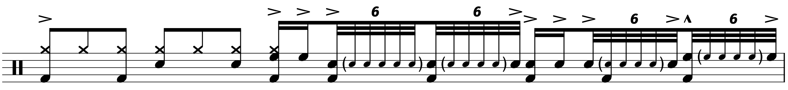
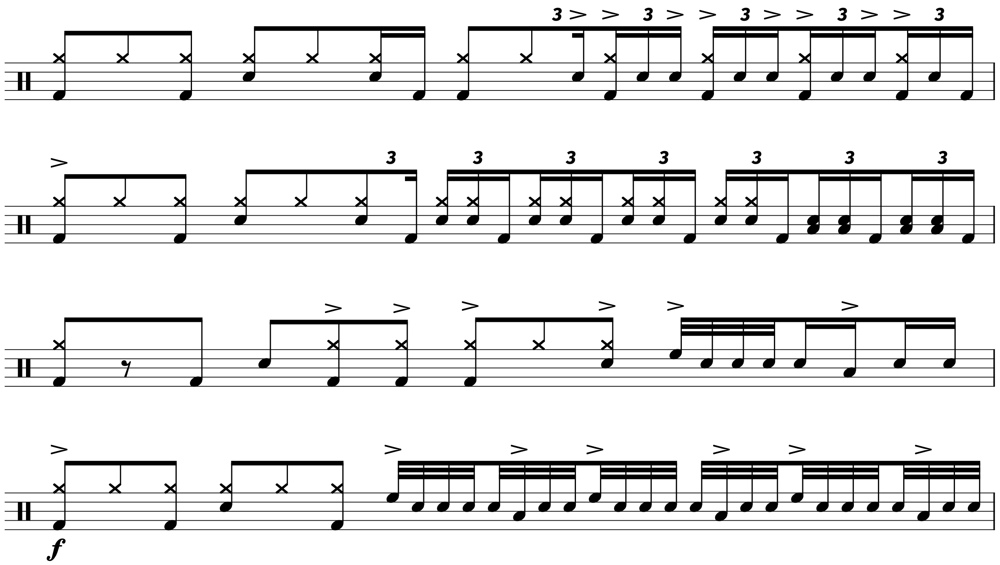
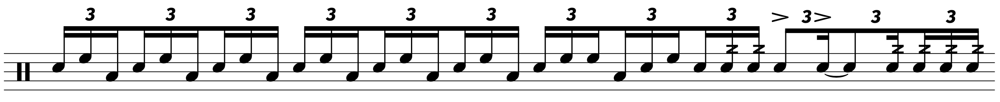
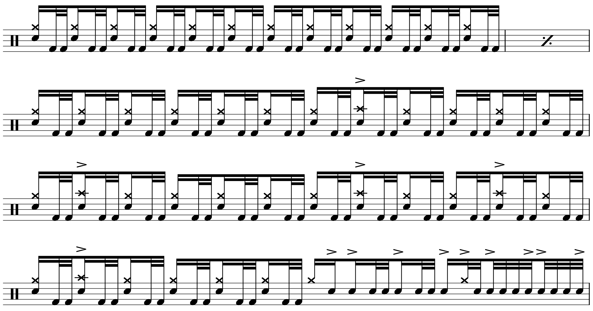

Transcription: “Voodoo Chile” — Mitch Mitchell with Jimi Hendrix
Posted on June 6, 2021

Now that it’s finally warming up, it’s time for some Jimi. I probably shouldn’t let the weather dictate my musical tastes, since (conceptually) music should be able to exist as an artistic statement on its own… but I just don’t feel like listening to Hendrix when it’s snowing outside. I first got into Hendrix in the springtime when things were warming up, although after looking into it, I discovered that two of the three Experience albums (including this one) were released in the winter/fall.
Within different drumming circles, I don’t see the blues discussed much. Everyone wants to know how to play jazz or how to get fluent with double bass, but the blues often get overlooked these days. For a lot of genres, people tend to have some sort of gateway song (e.g. “Take Five” is probably the first jazz song that many drummers ever heard). For me, I had listened to bluesy songs listening to the Stones and Zeppelin. But “Voodoo Chile” is really something else.
To be clear, I’m not talking about “Voodoo Child (Slight Return)”. I’m talking about the 15–minute behemoth: track 4 off of Electric Ladyland. I learned a lot about the blues from this one track; this tune was one of those transformative moments in your journey as a musician. I’ve also stolen a lot of licks from this one. Not sure why the “Slight Return” is so much more famous; I guess 15–minutes songs don’t get much radio play.
Taking a look at all 15 minutes would be pretty unreasonable. Instead, there are two major sections I wanted to look at: the guitar solo going into the free–time drum solo, and then the finale.
There are a lot of moves that should be recognizable to those familiar with Mitch’s playing, but the 12/8 signature gives things an interesting flair, and Mitch has some other tricks here and there. He uses a lot of 32nd note fills, including a great 2 bar fill that does an incredible job of building anticipation for the start of the guitar solo at 0:00:
Moreover, there are a lot of triplet fills, and I think a few of them have some puh–duh–duhs thrown in to help deal with the odd groupings of notes. Mitch also shows off his chops with some fiery singles at 0:00:
Also take note of the groove near the start of the organ solo at 0:00, where Mitch basically plays a 3:2 polyrhythm in the hands:
Much like “Hey Joe”, Mitch uses his playing to continuously build throughout the different sections. I’m a big fan of these four bars going into the climax of the organ solo:
He starts with some triplets puh–duh–duhs before a very interesting take on the “Bonham” hand–to–foot triplet in the next bar. He then does a bit of foreshadowing for an awesome paradiddle fill in bar four.
I had to skip over the big drum solo in the middle of the tune. It doesn’t have a strict sense of time and I was having trouble making out all of his playing. As I wrote about in the past, I’m generally not interested in dissecting out–of–time drumming. There’s nothing necessarily wrong with it, but I don’t encounter those situations enough in my own playing to justify spending a lot of time figuring stuff like that out.
I couldn’t help but notice that right before the drum solo, Mitch sounds like he’s doing some sort of sweep thing across the toms, where a double is split between two different drums:
The next big section is the finale. I want to point out Mitch’s bass drum chops — his bass drumming often gets overlooked, but check out this demanding section of 32nd kick doubles near the end of the tune:
Unsurprisingly, I have no idea what kit Mitch is using for this number. I think I hear a rack tom and a floor tom, but I’m really not sure, and he could be using a “1 up 2 down” setup. The only photo I could find of Mitch in the studio during the Experience years is this one, apparently taken in London, 1967. You can see he has three toms.
However, we know that Voodoo Chile was specifically recorded at the Record Plant in New York City, circa May 1968. In this photo of Mitch at the Record Plant in ’69, you can see him cramped in a corner with some shielding (here’s another angle). It looks like he has a smaller setup, but who knows for sure. I’m pretty frustrated that there’s no quality info regarding the drums that were used by the guy who backed the greatest guitarist in history. But what can you do?
The engraving was a bit of a pain for this one. Because it’s 12/8, many of the measures are stuffed with notes and fill up an entire system. I try to go for clarity and consistency, and it was annoying me to see every other line alternating between having one measure or two. So I just set the score to break after every measure. It’s a terrible waste of space though; this is my longest transcription yet at 8 pages. I’m sure some engraving experts would disapprove, even more so if they learned I did it in MuseScore. It’s tough to learn about engraving unless you just spent a lot of time with professionally published sheet music. And even then I hate the way most drum scores look. Whatever, my site my rules.
I also had trouble making out some of the drums, so like with “Hey Joe”, I went to Moises for help. It did a good job of highlighting the kick drum, but everything else kind of smeared together, so it didn’t give me much to go on regarding the toms. Oh well, happy D–Day everyone.
“Voodoo Chile” on Songwhip (Songwhip is being dumb so here’s a Spotify link).
Tags: 2021 • Transcription • Mitch Mitchell • Jimi Hendrix